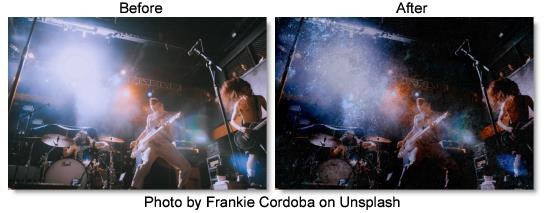

S_Grunge
Description
Simulates many different kinds of grunge including dirt, stains, flecks, grime, scratches, and paint. Up to three different kinds of grunge can be combined.
The S_Grunge filter comes from the Emmy award winning Boris FX Sapphire filter set.
Category
Render.
Controls
Presets
To select a preset, pick one from the Presets window.
Stamp Density
The overall number of stamps over the frame. Increase for more stamps, decrease for fewer.
Stamp Size
Scales the overall size of the grunge stamps.
Stamp Opacity
The overall opacity of the grunge stamps.
Stamp Brightness
Controls the brightness of the grunge stamps.
Stamp Center
The overall position of the center of the grunge stamps.
Seed
Used to initialize the random number generator for the stamp positioning, size, and variation. The actual seed value is not significant, but different seeds produce different results and the same value should give a repeatable result.
Frame Amount
Controls the brightness of the grunge inside the frame or border. If Frame Amount is set to anything other than 0, Grunge will create a picture frame border of grunge around the frame center. At a Frame Amount of 1, stamps inside the frame are completely invisible and at a Frame Amount of 0, there is no frame.
Frame Details
Frame Softness
The width of the frame's soft edge. Larger values give the grunge frame a softness as the grunge brightness fades on the edges.
Frame Radius
Distance from the center to apply the grunge frame.
Frame Rel Height
The relative vertical size of the frame shape. Increase for a taller shape, decrease for a wider one.
Invert Frame
If enabled, shows the grunge in the center of the frame instead of at the edge of the frame.
Stamp1-3
The style of grunge to apply. Up to three styles may be selected.
None
No grunge.
Plaster
Large low detail grunge simulating plaster.
Garage Floor
Large speckled grunge reminiscent of pavement.
Speckles
Groups of small, similar sized, dots of grunge similar to paint spray.
Paint Spray
Groups of small and medium splashes of paint similar to speckles.
Paint Splatters
Long splashes of paint.
Hairline Cracks
Long, narrow, wiggly cracks with no branches.
Tile Cracks
Long, straight jagged cracks.
Pavement Cracks
Very branchy cracks with very varied widths.
Hairs
Curly and straight hairs of varying sizes.
Scratches
Straight scratches biased towards the diagonals.
Frost
Patches of frost.
Glass Cracks
Patches of webbed glass cracks.
Clouds
Puffs of clouds similar to smoke and watercolor drops.
Smoke
Whisps of smoke, similar to clouds and watercolor drops.
Splotches
Paint splotches with lots of streaks of paint spreading outward.
Corrosion
Patches of rust like damage.
Watercolor Drops
Low detail splashes of grunge similar to clouds and smoke.
Dust
Small particles of grunge varying in shape similar to flecks.
Stains
Coffee and water stains.
Flecks
Small to medium particles of grunge varying in shape and size similar to dust.
Stampt1-3 Details
Stamp1-3 Rel Density
Scales the density for the specific stamp collection.
Stamp1-3 Color1
Beginning of the range of colors for the stamp collection.
Stamp1-3 Color2
End of the range of colors for the stamp collection. Each piece of grunge will have a random color between Stamp Color1 and Stamp Color2.
Stamp1-3 Rel Brightness
Scales the brightness for the specific stamp collection.
Stamp1-3 Rel Opacity
Scales the opacity for the specific stamp collection.
Stamp1-3 Rel Size
Scales the size for the specific stamp collection.
Vary Stamp1-3 Brightness
Amount to vary the brightness from one piece of grunge to the next.
Vary Stamp1-3 Opacity
Amount to vary the opacity from one piece of grunge to the next.
Vary Stamp1-3 Size
Amount to vary the size from one piece of grunge to the next.
Emboss
Emboss Bumps Scale
Scales the amplitude of the bumps.
Emboss Light Angle
Adjusts the angle of light for the emboss.
Emboss Smooth.
Smooths the small details of the image so they don't get embossed as strongly as the big features. Set to 0 to emboss all details. Increase to smooth out more details.
Emboss Threshold
Any grunge brighter than the threshold will be a bump and any grunge darker than the threshold will be a pit.
Blur Grunge
Blur Grunge
Blurs the grunge. Increase for more blur. Doesn't affect the image.
Blur Grunge Rel X & Y
Scales the width of the blur.
Combine
Determines how the grunge is combined with the image.
Grunge Only
The grunge image with no background.
Comp
Composites the grunge image over the original image.
Mult
This can be used as an intersection operation on two images. White is the identity for Multiply, where one image contains white, the other is not affected, so the result only contains white where both inputs are white.
Add
Adds the grunge image to the original image.
Screen
Performs a blend function which can help prevent overly bright results.
Difference
Similar to Subtract, but the absolute value of the result is used, which tends to give more resulting colors in bounds. This can be used to select the regions of two images where one or the other is white, but not both.
Subtract
Subtracts the grunge image from the original image.
Overlay
Combines grunge and original image using an overlay function.
Hard Light
Similar to overlay but with grunge and the original image swapped.
Soft Light
Darkens or lightens the original image depending on the grunge image.
Color Dodge
Brightens the original image depending on the grunge image.
Color Burn
Darkens the original image depending on the grunge image.
Darken
The minimum of the grunge image and the original image. This can also be used as an intersection operation with slightly different results than Multiply.
Lighten
The maximum of the grunge image and the original image. This can also be used as a union operation with slightly different results than Screen.
Exclusion
Similar to Difference but with smoother results.
Linear Dodge
Adds the grunge image to the original image and clamps the result at white.
Linear Burn
Adds the grunge image to the original image but offsets to make the result darker. Similar to multiply in that combining with white provides no change and combining with black results in black.
Linear Light
Performs a linear burn or linear dodge depending on if the grunge image is more or less than 50 percent gray.
Scale Background
Scales the brightness of the background before combining with the grunges. If 0, the result will contain only the grunge image over black.
Show Emboss Light Angle
Enables/disables the on-screen control for adjusting the Emboss Light Angle parameter.
Show Frame Radius
Enables/disables the on-screen control for adjusting the Frame Radius parameter.
Show Frame Center
Enables/disables the on-screen control for adjusting the Frame Center parameter.